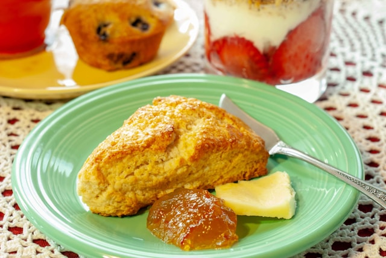

Lemon Scones

Description
Have you ever tasted a lemon scone that you DIDN'T love? Well
we're going to keep that trend going, because these flaky, zesty lemon
scones just can't be beat!
- Prep Time: 25 mins
- Cook Time: 15 mins
- Additional Time: 15 mins
- Total Time: 55 mins
- Servings: 10
- Yield: 10 scones
Ingredients
Lemon Scones:
- 3 cups all-purpose flour
- ⅓ cup white sugar
- 1 ½ teaspoons baking powder
- 1 ½ teaspoons baking soda
- ⅓ teaspoon salt
- ¾ cup cold butter, cut into pieces
- 9 tablespoons milk
- 3 tablespoons lemon juice
- 2 ½ teaspoons lemon zest
- 1 ½ teaspoons vinegar
Lemon Glaze:
- 2 cups confectioners' sugar
- ⅓ cup butter, melted
- 2 ½ tablespoons lemon juice
- ½ teaspoon vanilla extract
- 2 tablespoons water, or as needed
Steps
- Gather the ingredients. Preheat the oven to 350 degrees F (175 degrees C).
- To make the scones: Whisk flour, sugar, baking powder, baking soda, and salt together in a large bowl. Cut in cold butter with 2 knives or a pastry blender until mixture resembles coarse crumbs. Whisk milk, lemon juice, lemon zest, and vinegar in a small bowl; stir into flour mixture until dough is moistened.
- Turn dough out onto a lightly floured surface and knead briefly, 5 or 6 turns.
- Pat or roll dough out into a 1-inch-thick round. Cut into 10 wedge-shaped pieces; arrange 1 inch apart on a baking sheet.
- Bake in the preheated oven until bottom edges are golden brown, 12 to 15 minutes. Cool scones on a wire rack for 15 minutes.
- Meanwhile, to make the lemon glaze: Stir confectioners' sugar, melted butter, lemon juice, and vanilla together in a bowl until smooth. Stir water into sugar mixture, 1 tablespoon at a time, to make a glaze; drizzle glaze over warm scones.